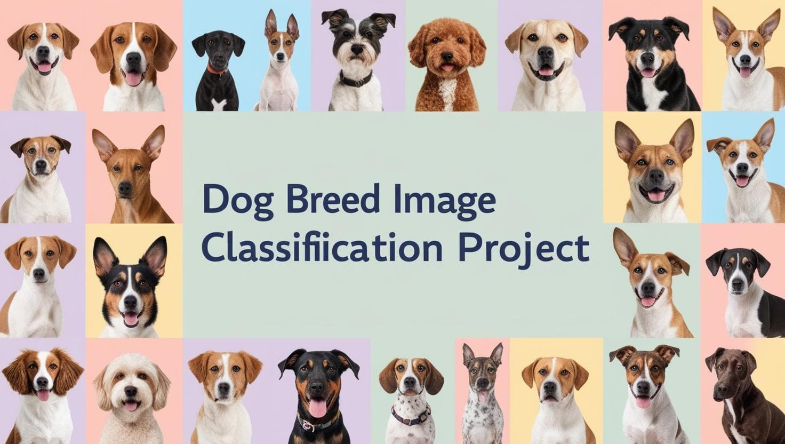
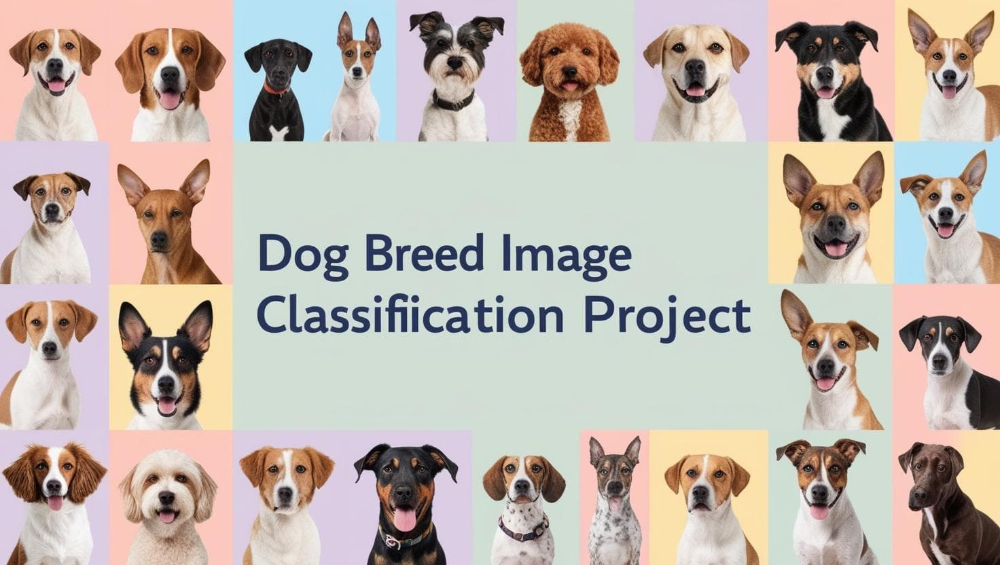

BurnScape leverages AI and geospatial data to detect burned vs unburned surfaces, using the PrithviT_100m pre-trained model for image segmentation. We tackled challenges like imbalanced datasets and geospatial data processing, enhancing my skills in machine learning, hyperparameter tuning, and model evaluation. This project deepened my passion for AI-driven environmental solutions.
 

This project focuses on classifying images of dogs into specific breeds, utilizing machine learning to distinguish between dog and non-dog images. The classifier leverages pre-trained Convolutional Neural Network (CNN) models to identify accurately whether an image contains a dog and, if so, predict its breed. The primary goal is to assess the model's ability to correctly classify dog breeds.

This project focuses on flower classification using deep learning, achieving 93% accuracy across 102 flower categories. It utilizes a pre-trained model architecture and supports customizable training parameters, including learning rate, epochs, and hidden units. The project is designed for flexibility, allowing for GPU acceleration and checkpoint saving. Additionally, it features a prediction script that identifies flower types from new images with configurable top predictions, making it a robust tool for image classification tasks.
Explore the project

Collected data and stored data in a local database. Queried the local database using SQL and imported my data to Jupyter lab for further pre-processing and EDA with Python. Executed an in-depth HealthyPlace YouTube Analytics Report for May 2024.

Developed a comprehensive Power BI dashboard to analyze and visualize customer churn
data for a telecommunications company as part of the PWC job simulation training